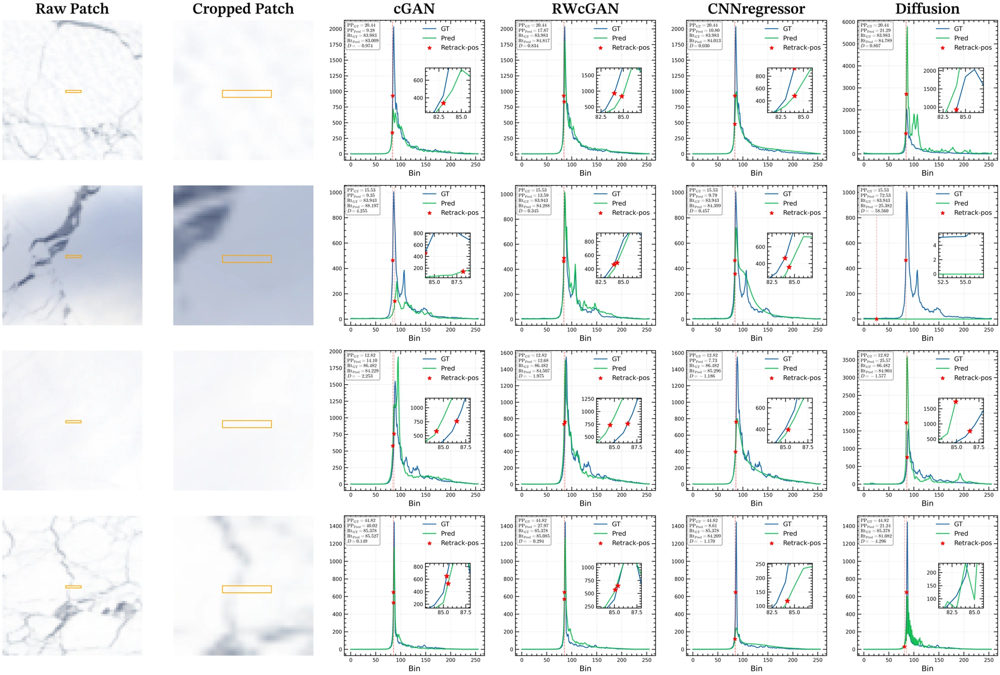
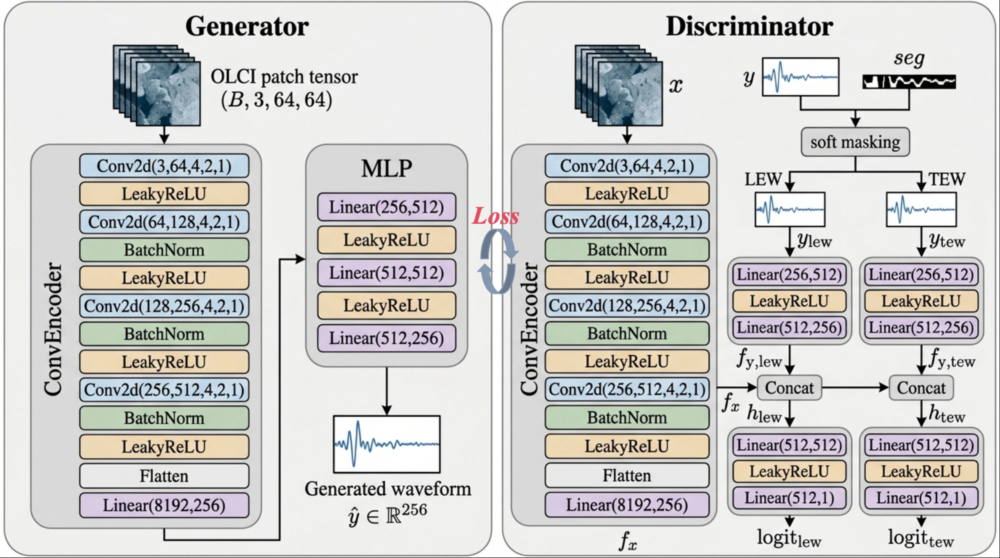
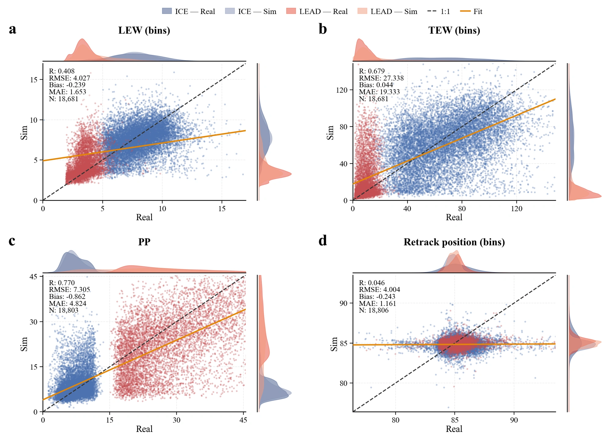
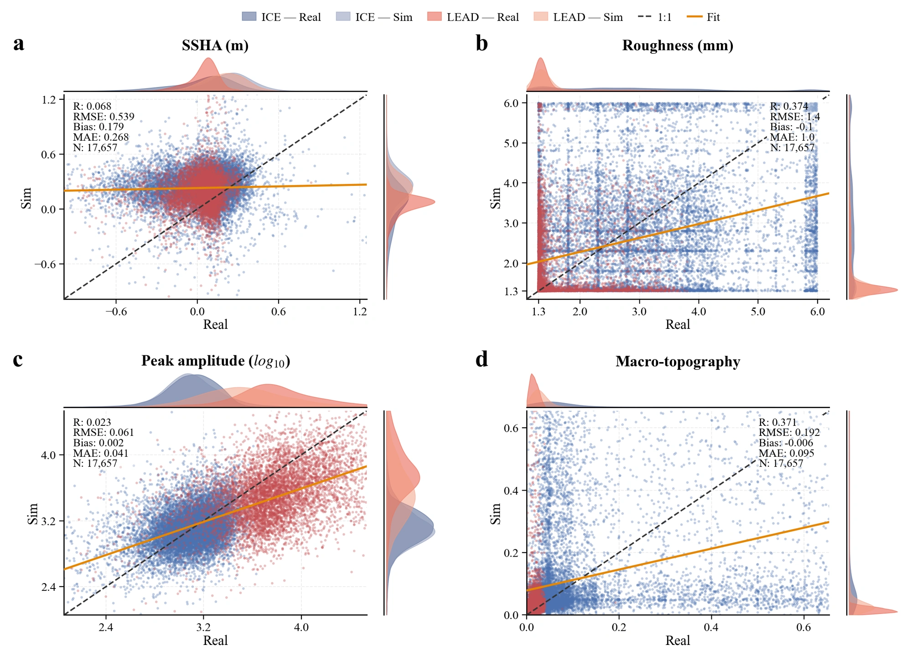

Representative Results
Image-to-waveform generation
Four representative samples compare cGAN, RWcGAN, CNN regressor, and diffusion. Insets show the retrack region; red markers identify observed and predicted retrack positions.

Research
Sea-ice radar echoes are difficult to interpret because snow, roughness, open-water leads, and mixed surface types can all change the returned waveform within one satellite footprint. This project treats waveform formation as a cross-modal generation problem: from co-located Sentinel-3 OLCI optical image patches, a conditional generative model learns to produce the corresponding SRAL radar-altimetry waveforms. I evaluate the generated echoes by waveform accuracy, morphological descriptors, and retracking-based physical consistency, showing how multimodal deep learning can link visible sea-ice structure with radar-altimetry response for waveform interpretation and sea-ice retrieval. A key design is to encode the waveform in physically meaningful segments rather than as a single undifferentiated curve. This helps the model focus on the leading edge, trailing edge, peak structure, and retracker-relevant regions that carry most of the geophysical information.
Representative Results
Four representative samples compare cGAN, RWcGAN, CNN regressor, and diffusion. Insets show the retrack region; red markers identify observed and predicted retrack positions.

Model Architecture
RWcGAN maps co-located OLCI image patches into SAR altimetry waveforms. Regional discriminator branches supervise the leading-edge and trailing-edge segments.

Waveform Metrics
Joint distributions and marginal densities compare observed and RWcGAN-generated leading-edge width, trailing-edge width, pulse peakiness, and retrack position for sea-ice and lead samples.

Geophysical Retrieval
Observed and generated waveforms are compared through LARM-derived sea surface height anomaly, roughness, and macro-topography, together with peak amplitude on a logarithmic scale.

Demo
A compact animation demonstrates how generated waveform products vary along the Sentinel-3 track.